library(gutenbergr)
library(tidytext)
library(dplyr)
library(tidyr)
library(ggplot2)
library(patchwork)Project 2
Libraries
This nifty patchwork library can help us combine graphs to make side-by-side visualization possible
Functions
Lets make some funcitons to expedite this process. When downloading dataframes, we will need to use the gutenberg_download() function, the unnest the tokens with unnest_tokens(word, text), then remove stop words and unused columns.
This function will take in one parameter for the ID number of the text and return a dataframe of just the selected words from that text.
Code
book_load <- function(id_num) {
gutenberg_download(id_num, mirror = "http://mirror.csclub.uwaterloo.ca/gutenberg") |>
unnest_tokens(word, text) |> anti_join(stop_words) |> select(word)
}Lets also make a function that takes this dataframe and graphs it. We start by breaking it up into 100 chunks. We will then multiply by size_coefficient to ensure that the differences in text length do not affect the results.
The function will take in a dataframe and output a graph.
Code
graph_book <- function(df, title_str) {
size_coefficient <- (1000/nrow(df))
df_sentiment <- df |>
inner_join(get_sentiments("bing"), by = "word") |>
mutate(proportion = row_number() / n()) |>
mutate(chunk = ceiling(proportion * 100)) |>
group_by(chunk) |>
summarise(
sentiment_score = ((sum(sentiment == "positive") - sum(sentiment == "negative"))*size_coefficient),
proportion = first(proportion),
.groups = "drop"
)
ggplot(df_sentiment, aes(x = proportion, y = sentiment_score, fill = sentiment_score > 0)) +
geom_bar(stat = "identity", na.rm = TRUE) +
coord_cartesian(ylim = c(-1.5, 1)) +
scale_y_continuous(breaks = seq(-1.5, 1, by = 0.2)) +
scale_x_continuous(
limits = c(0, 1),
labels = scales::percent_format(),
breaks = seq(0, 1, 0.1)
) +
scale_fill_manual(
values = c("red", "blue"),
labels = c("Negative", "Positive"),
name = "Sentiment"
) +
labs(
title = paste(title_str, "Sentiment"),
x = "Progrssion",
y = "Sentiment"
) +
theme_minimal() +
theme(axis.text.x = element_text(angle = 45, hjust = 1))
}This function will get the same data that is in the graph as a dataframe.
The function takes in a dataframe parameter and returns a dataframe on sentiments and proportions
Code
sentiment_df <- function(df){
size_coefficient <- (1000/nrow(df))
df <- df |>
inner_join(get_sentiments("bing"), by = "word") |>
mutate(proportion = row_number() / n()) |>
mutate(chunk = ceiling(proportion * 100)) |>
group_by(chunk) |>
summarise(
sentiment_score = ((sum(sentiment == "positive") - sum(sentiment == "negative")) *
size_coefficient),
proportion = first(proportion),
.groups = "drop"
)
return(df)
}And a function to combine multiple dataframes into a single plot. This graph will plot the points of the sentiment values of all of the included dataframes onto a single graph and draw a curve to fit the plot.
This function takes in 2 dataframes and a title and outputs a graph.
Code
plot_multiple <- function(df1, df2, df3, df4, title_str){
combined_df <- bind_rows(bind_rows(df1, df2), bind_rows(df3, df4))
ggplot() +
geom_point(data = df1, aes(x = proportion, y = sentiment_score, color = "1")) +
geom_point(data = df2, aes(x = proportion, y = sentiment_score, color = "2")) +
geom_point(data = df3, aes(x = proportion, y = sentiment_score, color = "3")) +
geom_point(data = df4, aes(x = proportion, y = sentiment_score, color = "4")) +
geom_smooth(data = combined_df,aes(x = proportion, y = sentiment_score), method = "loess", se = FALSE) +
coord_cartesian(ylim = c(-1, 1)) +
scale_y_continuous(breaks = seq(-1, 1, by = 0.2)) +
labs(x = "X-axis Label", y = "Y-axis Label", title = title_str) +
theme_minimal()
}Data
Let’s get data from a variety of literary genres and see how they compare. Let’s compile texts from the following genres.
Philosophies
Comedies
Epics
Tragedies
# Philosophy
symbolic_logic <- book_load(28696)
practical_critique <- book_load(5683)
categories <- book_load(2412)
republic <- book_load(1497)
# Fiction
# Comedies
don_quixote <- book_load(996)
tristram_shandy <- book_load(1079)
divine_comedy <- book_load(8800)
inspector <- book_load(3735)
# Epics
illiad <- book_load(3059)
odyssey <- book_load(1727)
gilgamesh <- book_load(11000)
paradise_lost <- book_load(26)
# Tragedies
othello <- book_load(2267)
frankenstein <- book_load(84)
anna_karenina <- book_load(1399)
moby_dick <- book_load(2701)Graphing Books
Philosophy Graphs
Code
symbolic_logic |>
graph_book("Symbolic Logic") +
practical_critique |>
graph_book("A Critique of Practical Reason")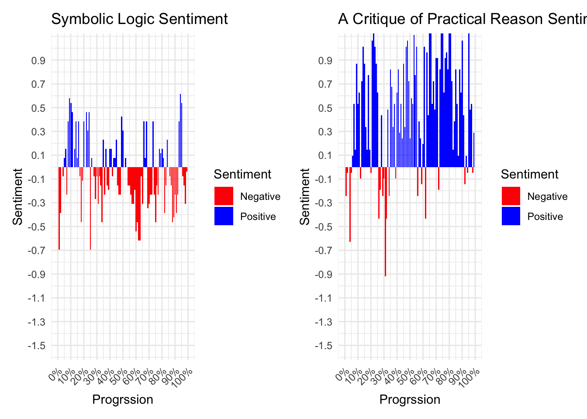
Code
categories |>
graph_book("Categories") +
republic |>
graph_book("The Republic")Warning in inner_join(df, get_sentiments("bing"), by = "word"): Detected an unexpected many-to-many relationship between `x` and `y`.
ℹ Row 19515 of `x` matches multiple rows in `y`.
ℹ Row 3828 of `y` matches multiple rows in `x`.
ℹ If a many-to-many relationship is expected, set `relationship =
"many-to-many"` to silence this warning.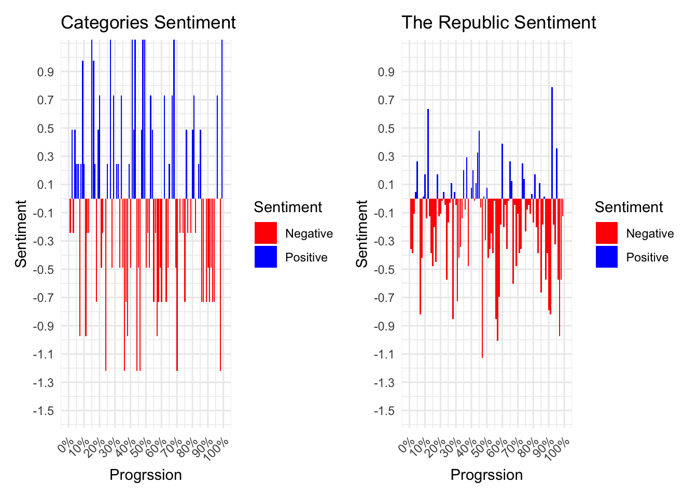
Comedy Graphs
Code
don_quixote |>
graph_book("Don Quixote") +
tristram_shandy |>
graph_book("Tristram Shandy")Warning in inner_join(df, get_sentiments("bing"), by = "word"): Detected an unexpected many-to-many relationship between `x` and `y`.
ℹ Row 22634 of `x` matches multiple rows in `y`.
ℹ Row 2269 of `y` matches multiple rows in `x`.
ℹ If a many-to-many relationship is expected, set `relationship =
"many-to-many"` to silence this warning.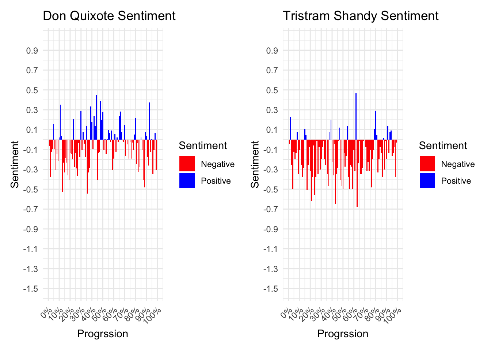
Code
divine_comedy |>
graph_book("The Divine Comedy") +
inspector |>
graph_book("The Government Inspector")Warning in inner_join(df, get_sentiments("bing"), by = "word"): Detected an unexpected many-to-many relationship between `x` and `y`.
ℹ Row 6774 of `x` matches multiple rows in `y`.
ℹ Row 2924 of `y` matches multiple rows in `x`.
ℹ If a many-to-many relationship is expected, set `relationship =
"many-to-many"` to silence this warning.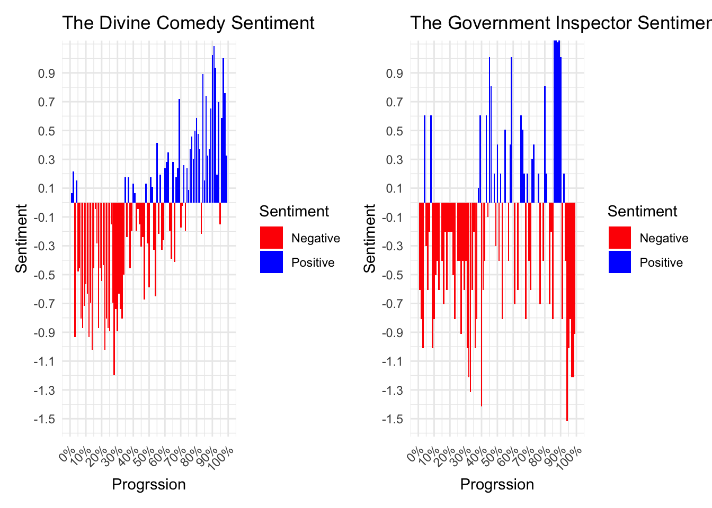
Epic Graphs
Code
illiad |>
graph_book("The Illiad") +
odyssey |>
graph_book("The Odyssey")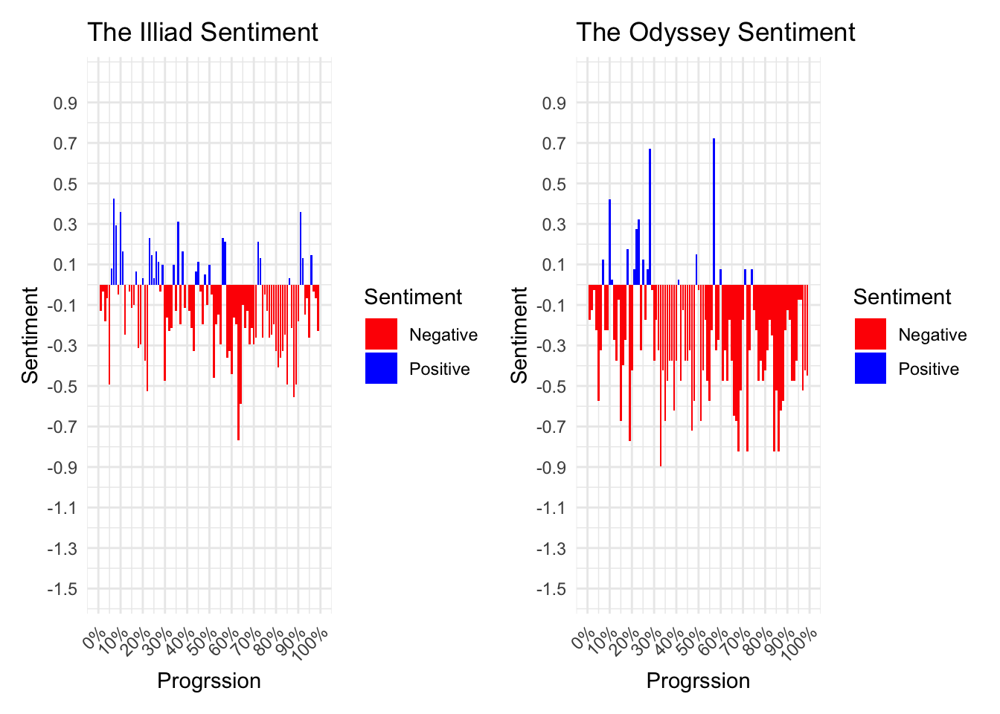
Code
gilgamesh |>
graph_book("Gilgamesh") +
paradise_lost |>
graph_book("Paradise Lost")Warning in inner_join(df, get_sentiments("bing"), by = "word"): Detected an unexpected many-to-many relationship between `x` and `y`.
ℹ Row 11199 of `x` matches multiple rows in `y`.
ℹ Row 4475 of `y` matches multiple rows in `x`.
ℹ If a many-to-many relationship is expected, set `relationship =
"many-to-many"` to silence this warning.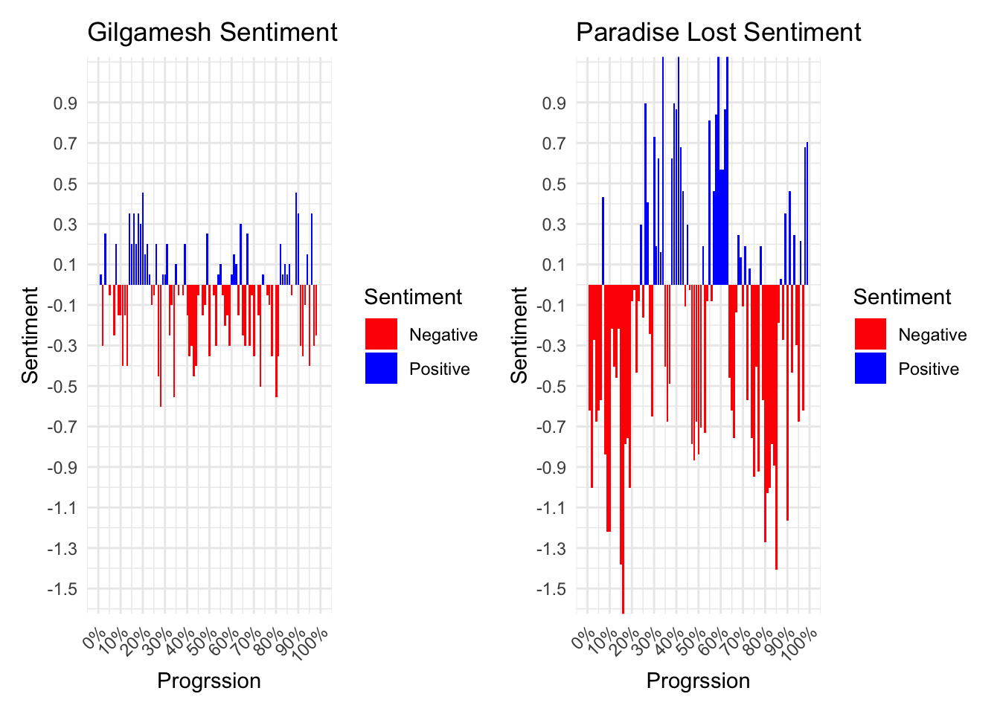
Tragedy Graphs
Code
othello |>
graph_book("Othello") +
frankenstein |>
graph_book("Frankenstein")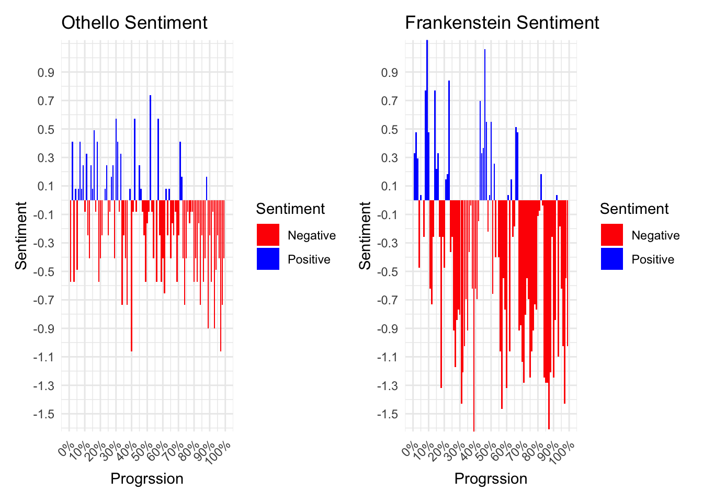
Code
anna_karenina |>
graph_book("Anna Karenina") +
moby_dick |>
graph_book("Moby Dick")Warning in inner_join(df, get_sentiments("bing"), by = "word"): Detected an unexpected many-to-many relationship between `x` and `y`.
ℹ Row 33519 of `x` matches multiple rows in `y`.
ℹ Row 6331 of `y` matches multiple rows in `x`.
ℹ If a many-to-many relationship is expected, set `relationship =
"many-to-many"` to silence this warning.Warning in inner_join(df, get_sentiments("bing"), by = "word"): Detected an unexpected many-to-many relationship between `x` and `y`.
ℹ Row 25922 of `x` matches multiple rows in `y`.
ℹ Row 1497 of `y` matches multiple rows in `x`.
ℹ If a many-to-many relationship is expected, set `relationship =
"many-to-many"` to silence this warning.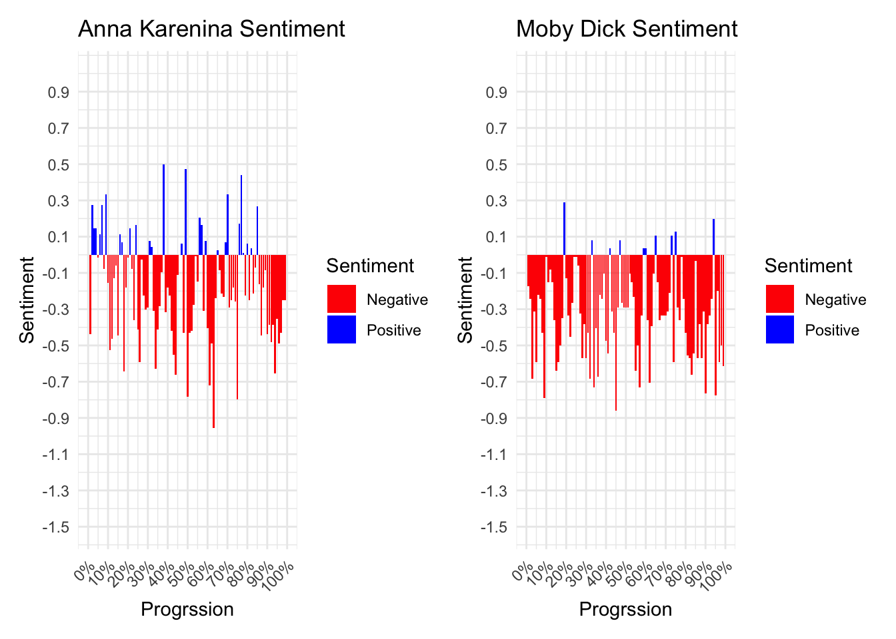
Tragedy books appear to have the strongest sentiment of any of the given genres. As expected, most of this sentiment is negative.
Genre Graphs
Combined Graphs
Warning in inner_join(df, get_sentiments("bing"), by = "word"): Detected an unexpected many-to-many relationship between `x` and `y`.
ℹ Row 19515 of `x` matches multiple rows in `y`.
ℹ Row 3828 of `y` matches multiple rows in `x`.
ℹ If a many-to-many relationship is expected, set `relationship =
"many-to-many"` to silence this warning.`geom_smooth()` using formula = 'y ~ x'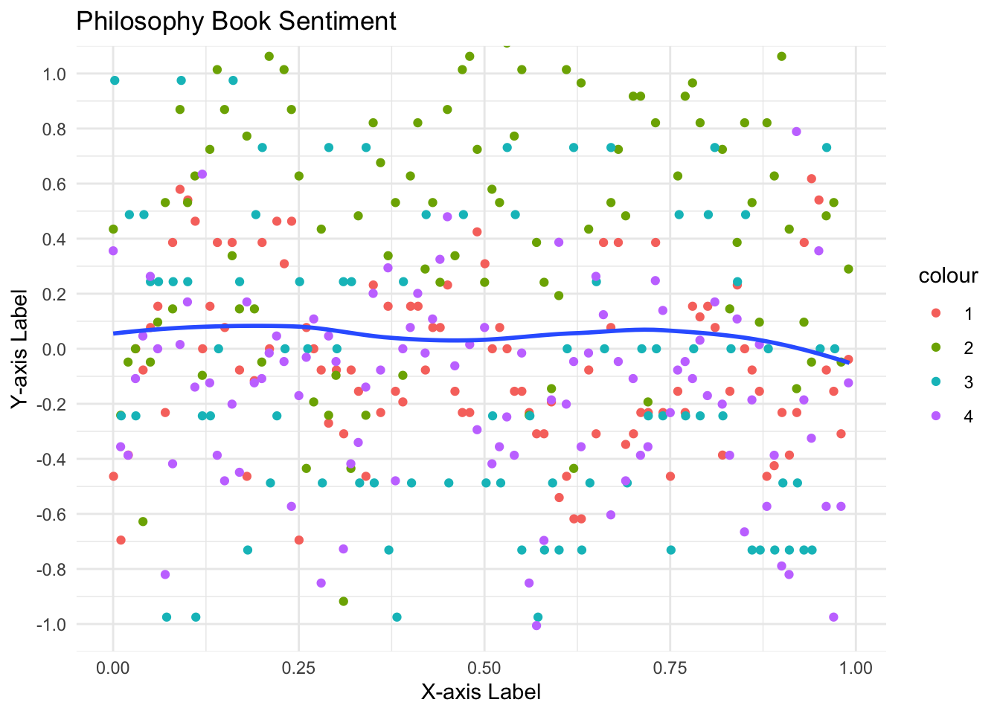
Warning in inner_join(df, get_sentiments("bing"), by = "word"): Detected an unexpected many-to-many relationship between `x` and `y`.
ℹ Row 22634 of `x` matches multiple rows in `y`.
ℹ Row 2269 of `y` matches multiple rows in `x`.
ℹ If a many-to-many relationship is expected, set `relationship =
"many-to-many"` to silence this warning.Warning in inner_join(df, get_sentiments("bing"), by = "word"): Detected an unexpected many-to-many relationship between `x` and `y`.
ℹ Row 6774 of `x` matches multiple rows in `y`.
ℹ Row 2924 of `y` matches multiple rows in `x`.
ℹ If a many-to-many relationship is expected, set `relationship =
"many-to-many"` to silence this warning.`geom_smooth()` using formula = 'y ~ x'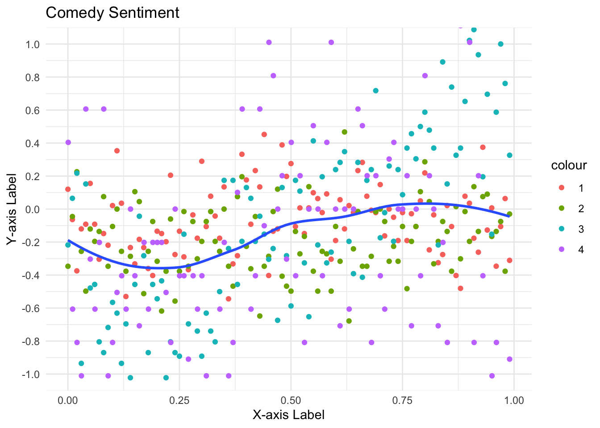
Warning in inner_join(df, get_sentiments("bing"), by = "word"): Detected an unexpected many-to-many relationship between `x` and `y`.
ℹ Row 11199 of `x` matches multiple rows in `y`.
ℹ Row 4475 of `y` matches multiple rows in `x`.
ℹ If a many-to-many relationship is expected, set `relationship =
"many-to-many"` to silence this warning.`geom_smooth()` using formula = 'y ~ x'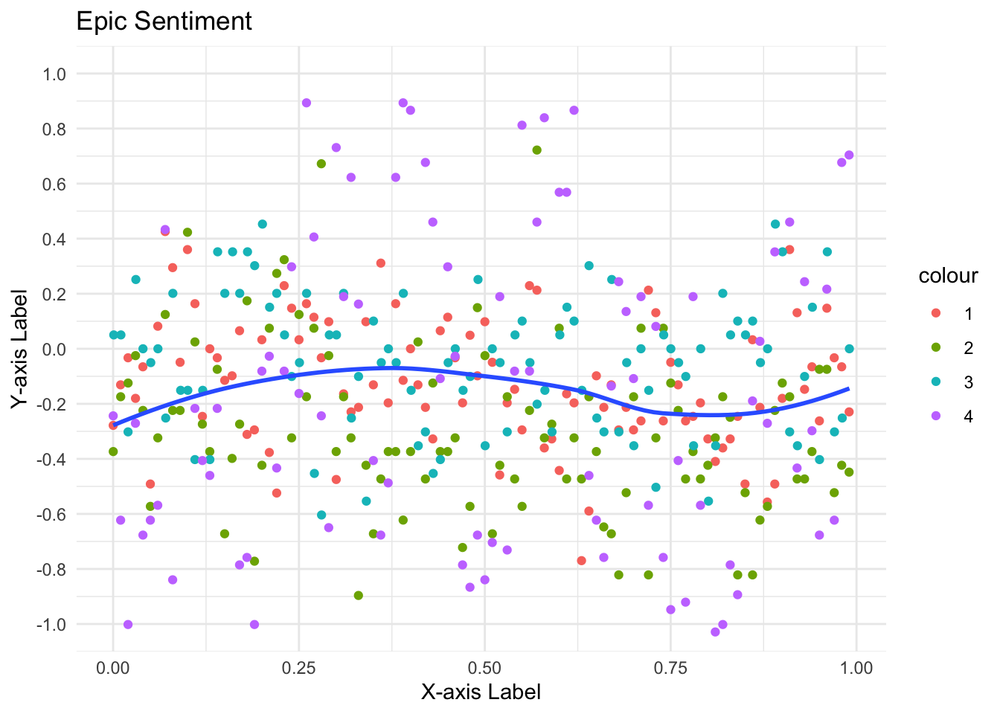
Warning in inner_join(df, get_sentiments("bing"), by = "word"): Detected an unexpected many-to-many relationship between `x` and `y`.
ℹ Row 33519 of `x` matches multiple rows in `y`.
ℹ Row 6331 of `y` matches multiple rows in `x`.
ℹ If a many-to-many relationship is expected, set `relationship =
"many-to-many"` to silence this warning.Warning in inner_join(df, get_sentiments("bing"), by = "word"): Detected an unexpected many-to-many relationship between `x` and `y`.
ℹ Row 25922 of `x` matches multiple rows in `y`.
ℹ Row 1497 of `y` matches multiple rows in `x`.
ℹ If a many-to-many relationship is expected, set `relationship =
"many-to-many"` to silence this warning.`geom_smooth()` using formula = 'y ~ x'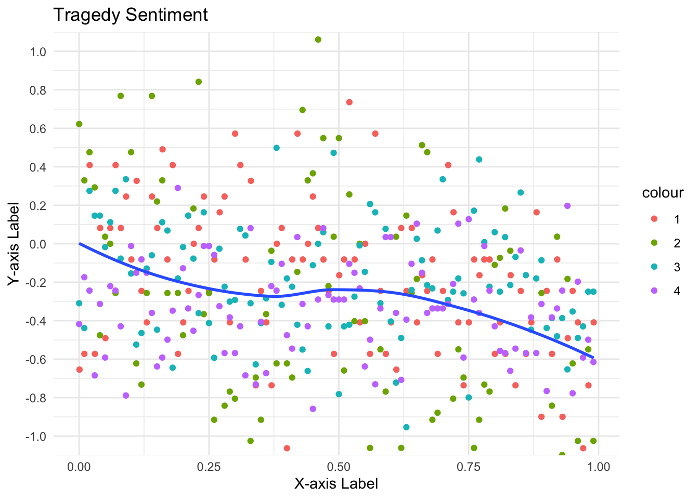
From these combined graphs we can assess the strength of sentiment (by the graph’s range), and the precision of the sentiment (by the variation in the graphs, since the graphs will be flatter the less of a pattern there is).
Conclusions
Philosophy Books
It looks like, while philosophers are very sentimental, there is no pattern of sentiment that is indicative of philosophy texts.
Comedies
The comedies have a low range and a very flat curve, so based on our data, we assume that comedies are less sentimental than Philosophy texts and Tragedies and that comedies do not follow any particular sentimental trend.
Epics
It appear that the beginnings of Epics have more positive sentiment and that that sentiment gradually declines before rising again towards the end. But overall, Epics are less sentimental than Philosophy books and Tragedies.
Tragedies
Tragedies have the strongest trend lines, and very strong sentiments. It appears that philosophy texts start with positive sentiment and end with negative sentiment, with a small reverse in the trend towards the middle. This appears to be a strong trend.